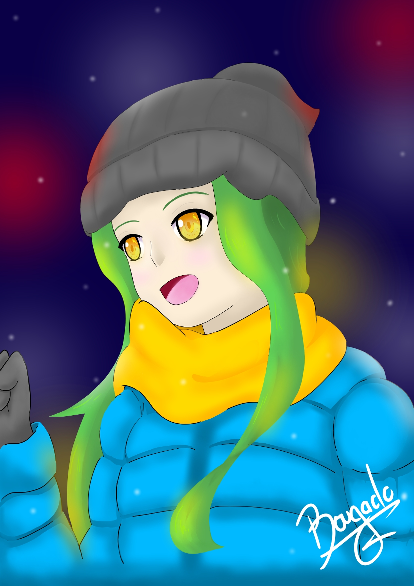

Road to be an Artist, c'est quoi ?
Le Road to be an Artist était un challenge que je me suis lancé en 2019 pour me motiver à devenir
meilleur en dessin et plus particulièrement dans le but de devenir illustrateur professionnel.
L'objectif était de dessiner tous les jours, ça pouvait aller de 2h à 10h de dessin mais le plus
important était de dessiner tous les jours pour garder un bon rythme de progression. Il valait mieux
faire 2h de dessin par jour pendant une semaine que 14h de dessin en un jour et plus rien sur les 6
derniers.
Pour que vous ayez un petit aperçu de ma progression, je vous ai mis juste en dessous ma toute
première illustration digitale réalisé en 2019 mais aussi une de mes dernières illustrations réalisées
en 2023.
Je vous ai également rajouté tout en bas une vidéo récapitulant mes 1000 premiers jours de dessin.
| Illustrations | |
|---|---|
| 2019 | 2023 |
|  |

|
Vidéo des 1000 premiers jours de dessin